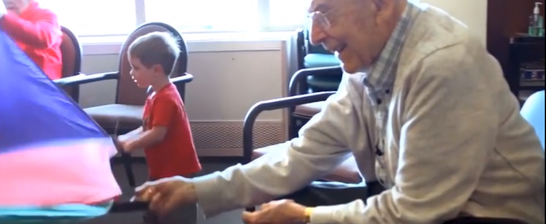
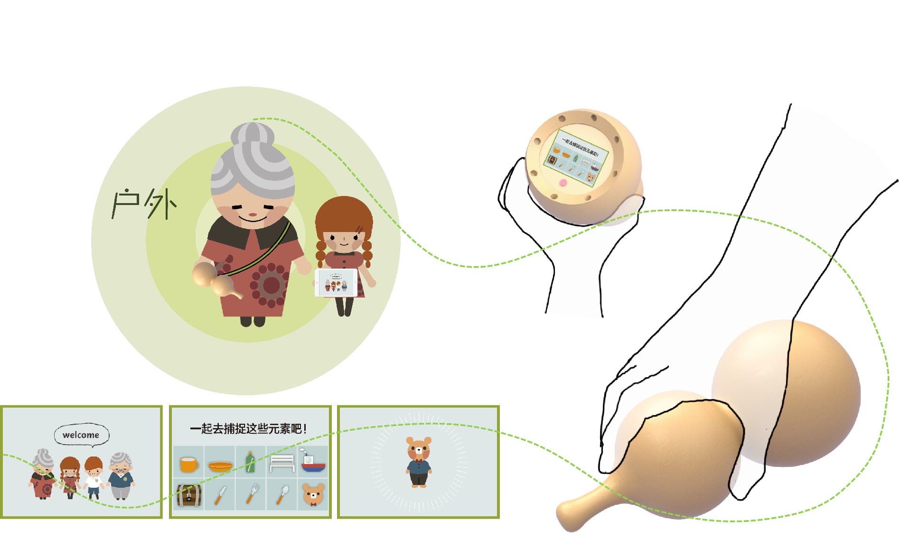
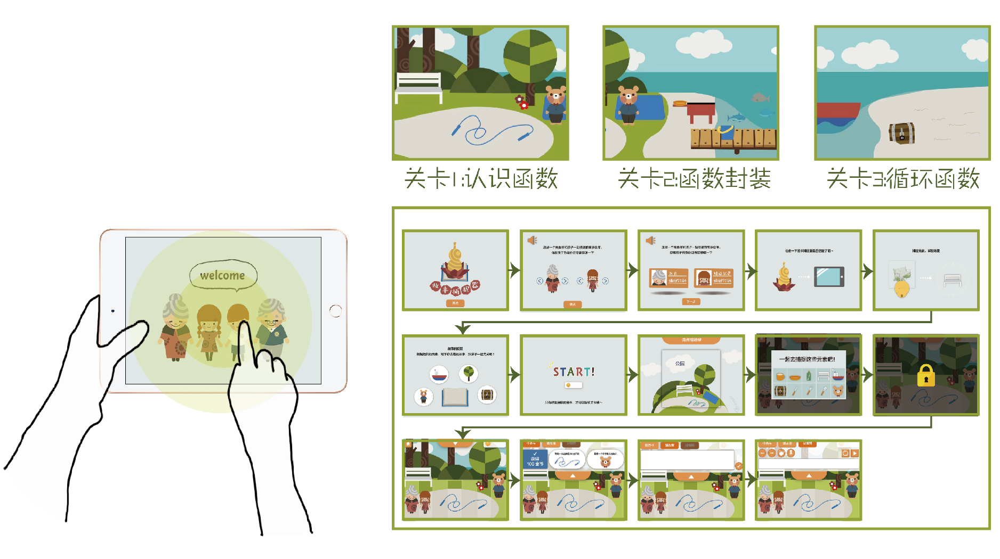

Design Background
在中国有一个庞大的“带娃老人”群体，由60岁左右的老人和5岁左右的孩子组成。60岁的初老人群随着年龄变大认知能力不断下降，与此同时5-6岁的孩子处于快速学习的阶段，不断学习接受新的事物，于是老人和孩子之间的话题越来越少，出现了沟通的断层。加之老人迟暮，家长也不放心老人对孩子的教育，有意限制隔代呆在一起玩耍的时间，隔代愈发疏远。

Preliminary Exploration of the Issue
通过对老年记忆障碍群体的调研，我们发现老人的运动器官常常伴随记忆一起衰退，头脑和四肢的失用会让老人失去自信，产生焦虑、消沉等心理问题。在老龄化程度不断加深和慢性病状况堪忧的今天，良好的运动习惯是健康生活的一剂良方。将记忆训练加入到趣味运动训练中，可以有效预防及改善老人的记忆障碍
Introduction to the Solution
产品组成
故事捕捉器是一种老人儿童交流的新媒介，是一款针对于老人和儿童协作完成的游戏设计，包括了实体葫芦状图像扫描仪和虚拟端游戏两部分。在故事捕捉器里，老人与孩子可以共同合作，到游戏内指定的户外场景进行物件图像收集，在游戏端点亮元素，老人在虚拟游戏内利用收集到的元素根据逻辑和想象编纂故事，孩子利用游戏内的可视化编程模块将故事完成，生成故事动画。


